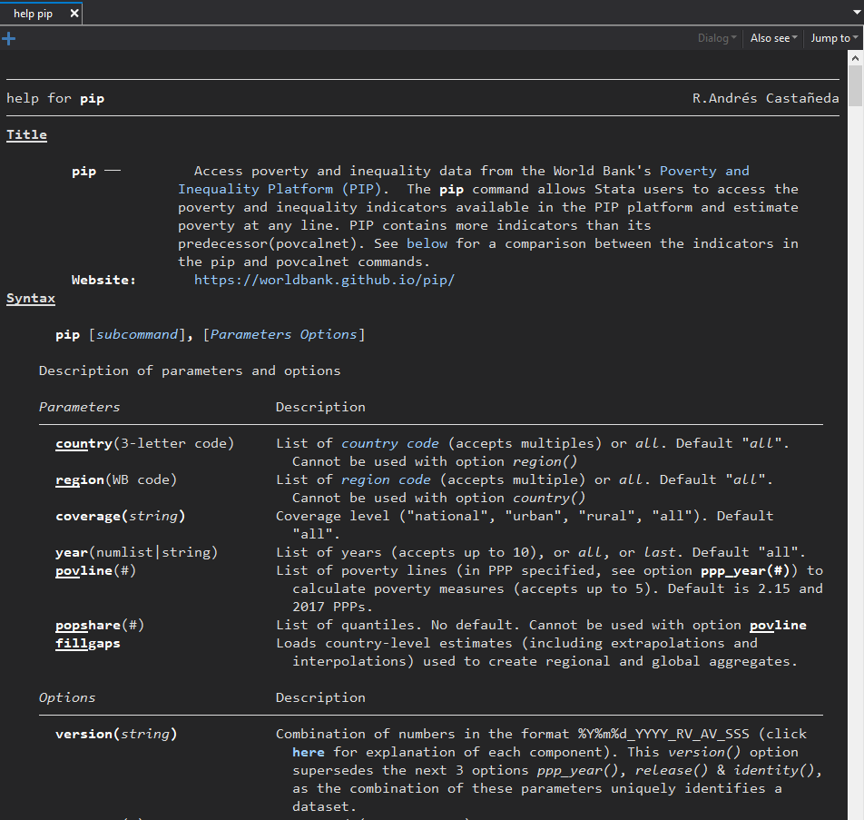
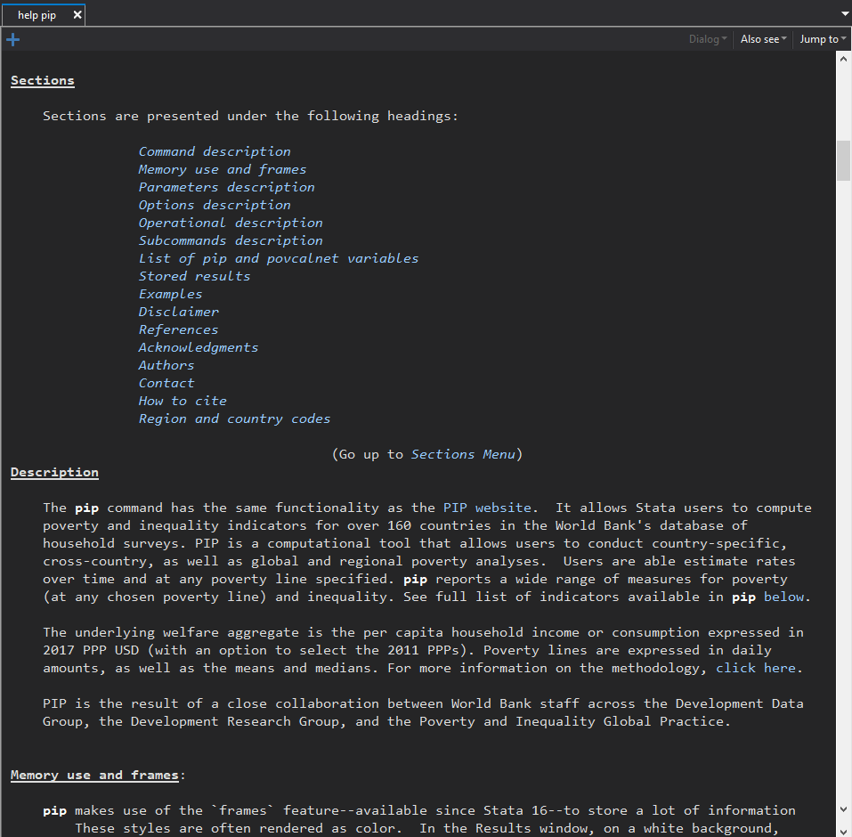
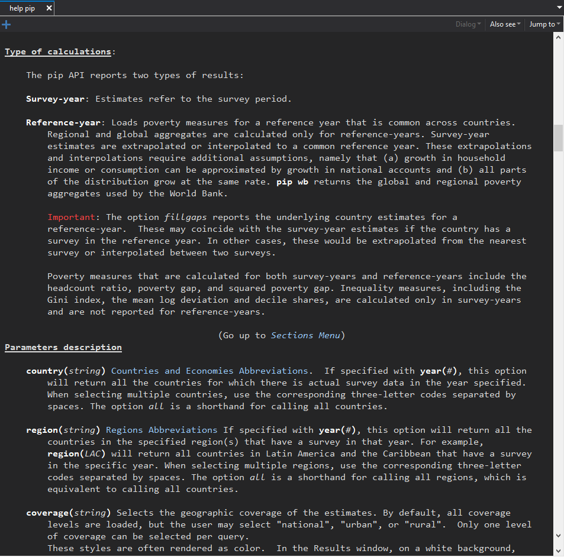
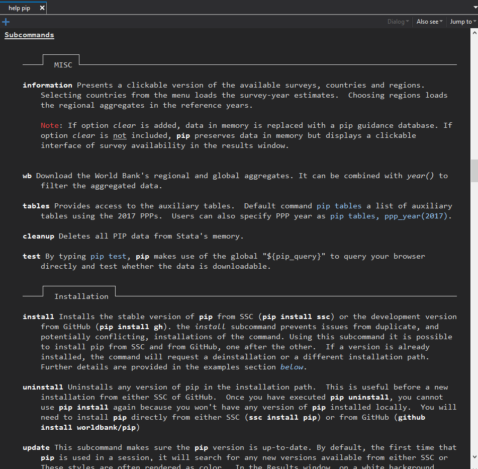
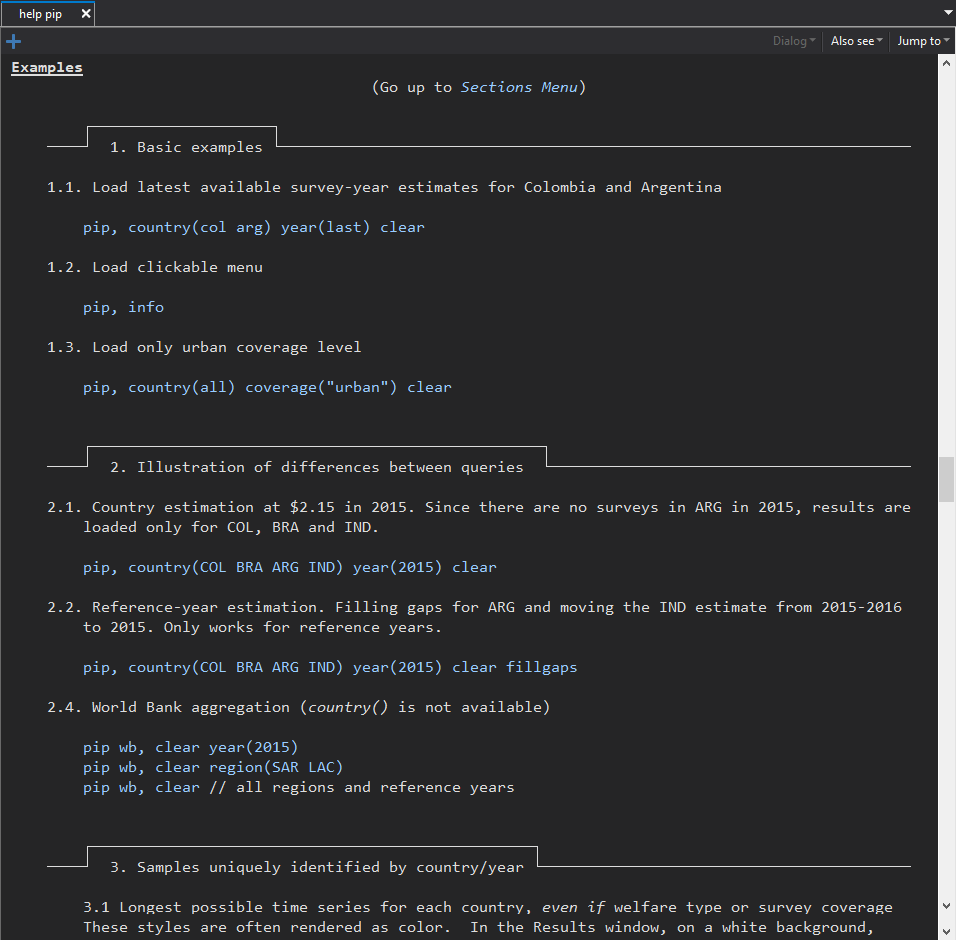
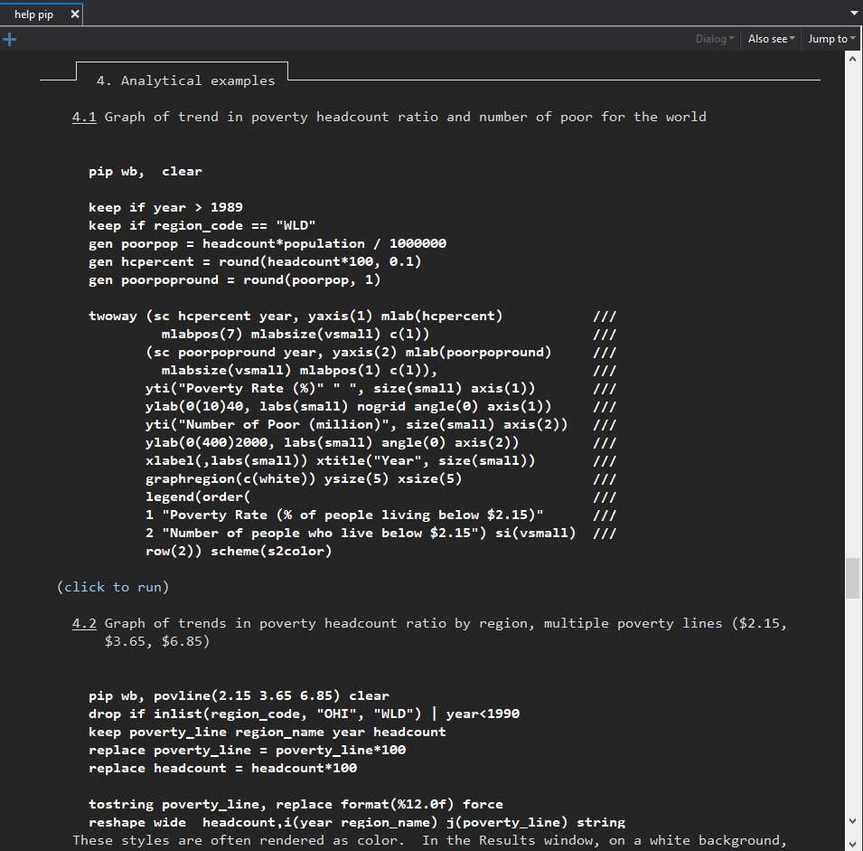
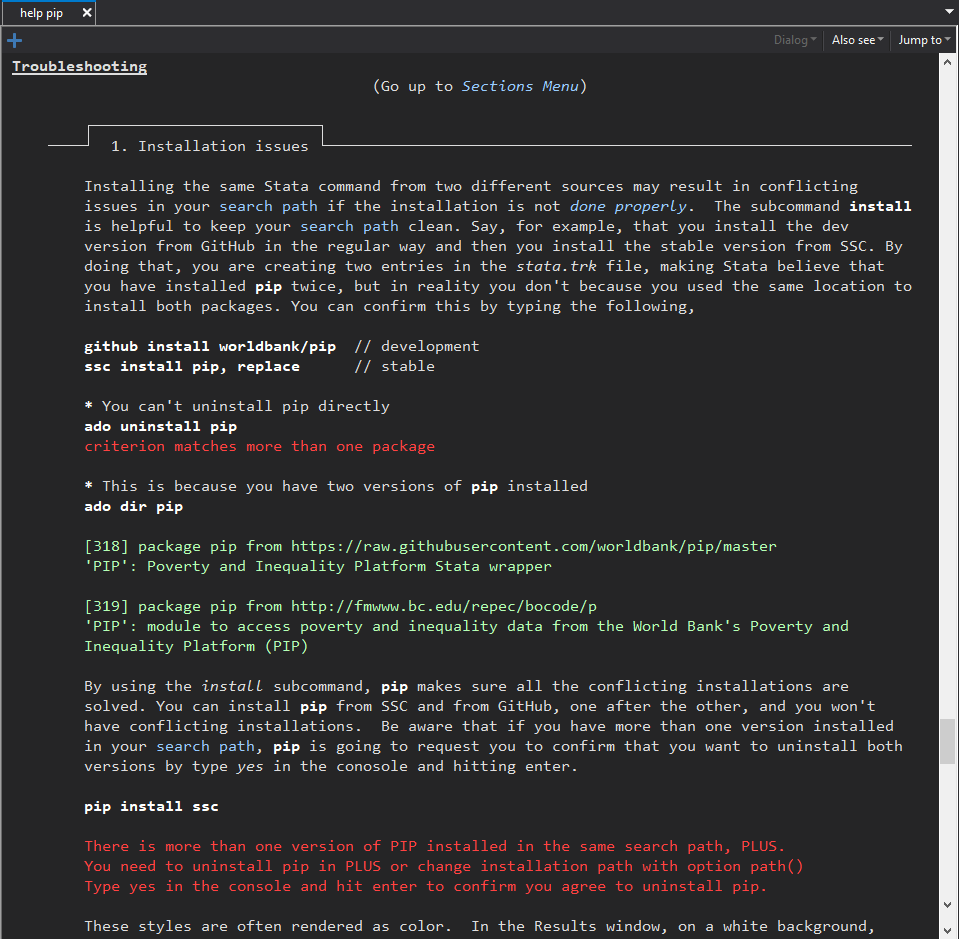
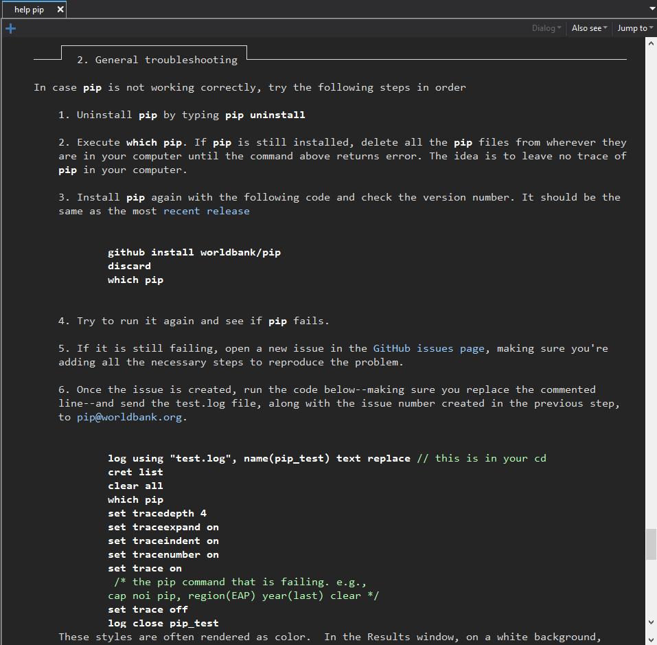
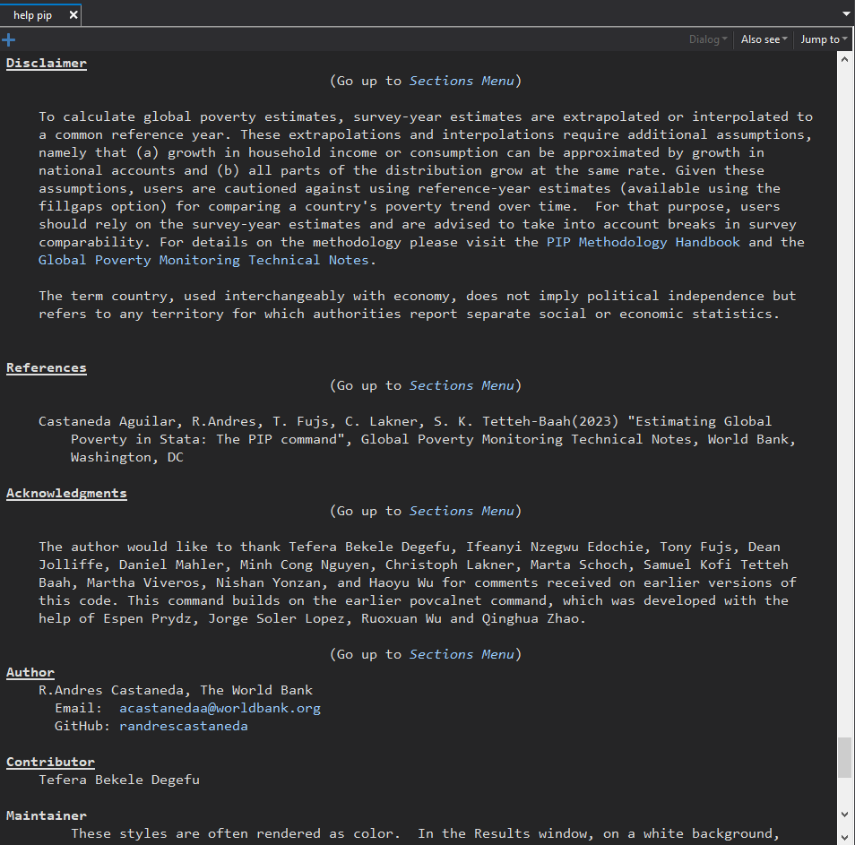

# A tibble: 2,320 × 4
country_code year poverty_line headcount
<chr> <dbl> <dbl> <dbl>
1 AGO 2000 2.15 0.2140885
2 AGO 2008 2.15 0.1463249
3 AGO 2018 2.15 0.3112201
4 ALB 1996 2.15 0.005348460
5 ALB 2002 2.15 0.01092647
6 ALB 2005 2.15 0.005910857
7 ALB 2008 2.15 0.001999251
8 ALB 2012 2.15 0.006206909
9 ALB 2014 2.15 0.01023101
10 ALB 2015 2.15 0.001206211
# ℹ 2,310 more rowsStata and R PIP clients
Accessing the World Bank’s estimates of poverty and inequality
Help file











# Number of poor by region
df <- get_wb() |>
filter(year > 1989 & year < 2019) |>
mutate(
pop_in_poverty = round(pop_in_poverty / 1000000, 0),
headcount = round(headcount, 3)
)
regions <- df |>
filter(!region_code %in% c("WLD", "AFE", "AFW")) |>
mutate(
region_name = fct_relevel(region_name,
c("Other high Income",
"Europe and Central Asia",
"Middle East and North Africa",
"Latin America and the Caribbean",
"East Asia and Pacific",
"South Asia",
"Sub-Saharan Africa"
))
)
world <- df |>
filter(region_code == "WLD")
gr2 <- ggplot(regions, aes(y = pop_in_poverty,
x = year,
fill = region_name)) +
geom_area() +
scale_y_continuous(
limits = c(0, 2000),
breaks = c(0, 500, 1000, 1500, 2000)
) +
scale_fill_tableau(palette = "Tableau 10") +
labs(
title = "Number of poor by region",
y = "Number of poor (million)",
x = ""
) +
theme_classic() +
theme(
legend.position = "bottom"
) +
geom_line(data = world,
size = rel(1.5),
alpha =.5,
linetype = "longdash")
Thanks.